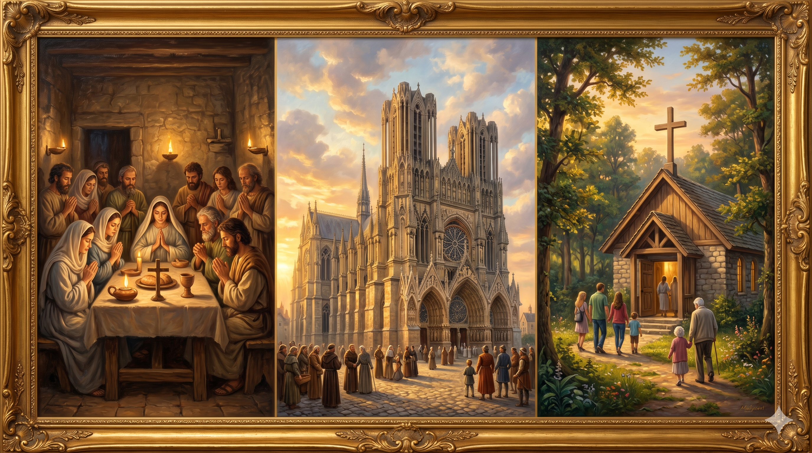

가이사랴 빌립보의 절벽 앞, 예수님이 베드로의 어깨에 손을 얹고 바위산을 가리키며 선언하시는 장면 — 햇살이 두 사람 뒤로 쏟아지며 거대한 암반 위로 황금빛 후광이 퍼지고, 베드로는 두 눈에 경외감을 가득 담고 예수님을 올려다보고 있다
"또 내가 네게 이르노니 너는 베드로라 내가 이 반석 위에 내 교회를 세우리니 음부의 권세가 이기지 못하리라 내가 천국 열쇠를 네게 주리니 네가 땅에서 무엇이든지 매면 하늘에서도 매일 것이요 네가 땅에서 무엇이든지 풀면 하늘에서도 풀리리라" — 마태복음 16:18–19
가이사랴 빌립보는 이방 신들의 신전이 즐비하고 로마 황제 숭배의 중심지였습니다. 그 거대한 바위산 앞에서 예수님은 "너는 베드로라 — 반석이라"고 선언하셨습니다. 시몬이라는 이름을 가진 어부에게 '케파(반석)'라는 이름을 주셨던 그 첫 순간이 이제 공식적인 사명의 언어로 확인됩니다. "이 반석 위에 내 교회를 세우리니"라는 말씀은 수천 년 후에도 울려 퍼지는 약속입니다. 음부의 권세, 곧 죽음과 어둠의 세력이 결코 이기지 못할 것이라는 선언은 교회의 존재 근거가 인간의 능력이 아니라 예수님의 말씀에 있음을 못 박는 선포입니다.
신학자들은 이 '반석'이 베드로 개인인지, 아니면 "주는 그리스도시요 살아 계신 하나님의 아들"이라는 고백인지 오랫동안 논의해 왔습니다. 그러나 어느 해석을 택하든 분명한 것은, 예수님께서 평범한 어부의 입에서 나온 고백을 기초석으로 삼으셨다는 사실입니다. 베드로는 실패하고, 부인하고, 흔들렸습니다. 그러나 예수님은 그런 그를 교회의 문을 여는 자리에 세우셨습니다. 하나님의 교회는 완전한 사람이 아니라, 은혜로 붙잡힌 사람들 위에 세워집니다.

2000년의 세월을 가로질러 세워진 교회들의 모습 — 초대교회 가정 모임의 촛불에서 중세 대성당의 첨탑, 현대의 소박한 예배당까지, 모두 하나의 고백 위에 서 있음을 암시하는 시간을 초월한 합성 이미지
베드로의 이름이 '반석'으로 바뀐 것은 그가 반석 같은 사람이어서가 아니었습니다. 예수님이 그를 반석으로 만드셨기 때문입니다. 오늘 우리도 스스로를 돌아볼 때 연약하고 흔들리는 존재임을 느낄 수 있습니다. 그러나 예수님은 우리의 약함을 보시고도 "너 위에 내 일을 세우겠다"고 말씀하십니다. 우리의 가능성이 아니라 그분의 약속이 기초가 됩니다. 이 진리 위에 서는 것이 신앙의 시작입니다.
"음부의 권세가 이기지 못하리라"는 약속은 오늘 교회가 직면한 모든 위기와 고난 앞에서 여전히 유효합니다. 국가 권력이 박해하고 사회가 외면해도, 내부 분열과 실패로 흔들려도, 교회는 무너지지 않습니다. 그 이유는 교회가 건물이나 조직이 아니라 살아 계신 그리스도의 선언 위에 서 있기 때문입니다. 우리는 그 교회의 한 부분으로 부름받았습니다. 오늘 내가 속한 공동체 안에서 반석 위에 서 있는 삶을 살고 있는지 묵상해 보시길 바랍니다.
예수님은 어부 시몬을 반석이라 부르셨습니다.
당신의 연약함이 그분의 교회를 막을 수 없습니다.
그분이 세우시면, 음부의 권세도 이기지 못합니다.